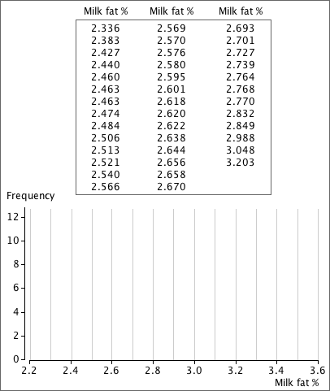
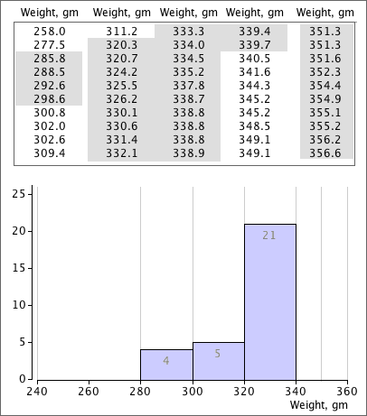

Drawing a histogram with equal class widths
We usually rely on a computer to draw histograms, but it is important to understand how they are formed.
In this exercise, the data values are sorted into increasing order on the left. Drag the tops of the rectangles to form a histogram of the data.
Mixed class widths
For some data sets, especially those with long tails, a smoother histogram is formed by using wider classes in the tails of the distribution and narrower classes where the density is high. In such histograms, the rectangles should not be drawn with height equal to frequency.
In the following exercise, the rectangles for some histogram classes have already been correctly drawn (pale blue). Drag the tops of the rectangles for the remaining classes to complete the histogram of the data.
Repeat with a few other data sets.
Part A.
The list of values below are milk fat contents from a herd of 40 cows. Draw a histogram of the data with class width 0.1.

Part B.
In the next example, complete the histogram by drawing the rectangles for the classes (140 - 280) , (340 - 350) and (350 - 360). Note that these classes have different widths from those of the three histogram classes whose rectangles have already been drawn.
